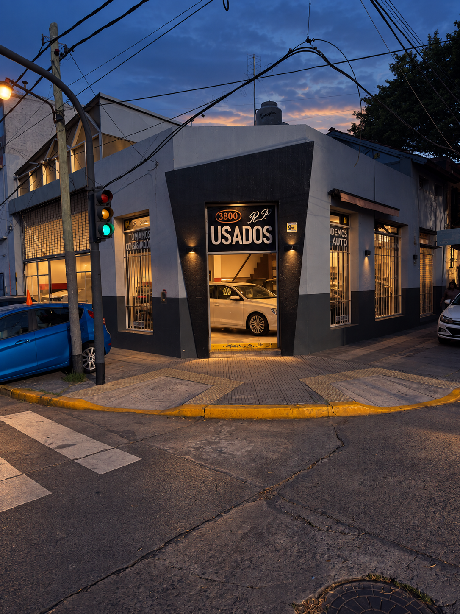

RP Usados / Ciudadela / Desde 1990
Tu próximo auto.
Un lugar
de siempre.
Una concesionaria con 36 años de trayectoria. Encontrá tu próximo vehículo y consultanos por WhatsApp.
Recorrer el stockChacabuco 399Buenos Aires, Argentina

No valida geometría ni materiales finales.